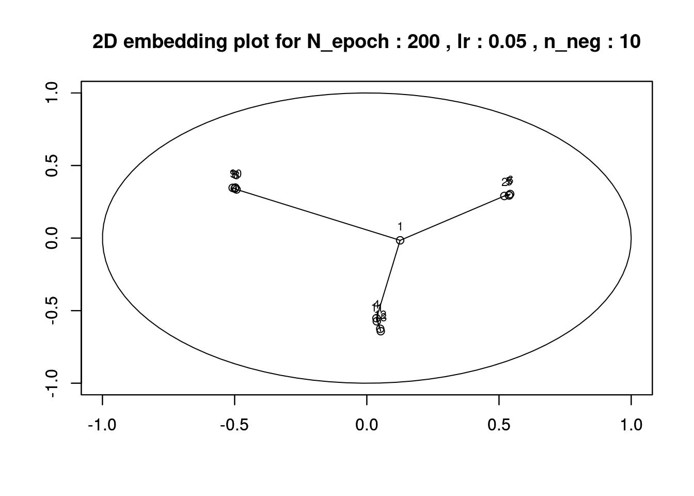
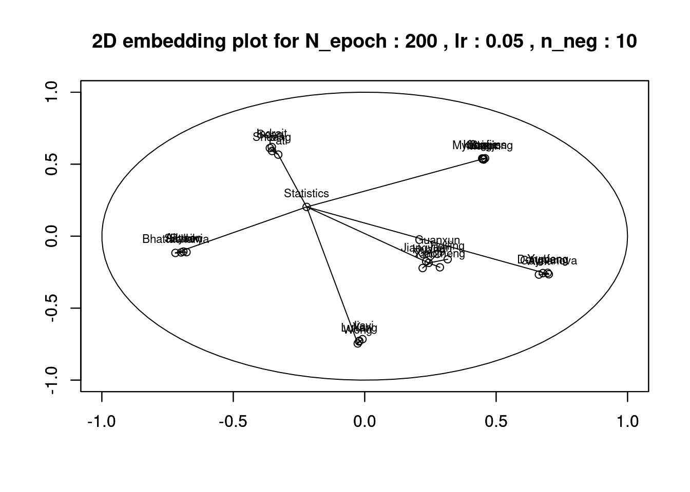
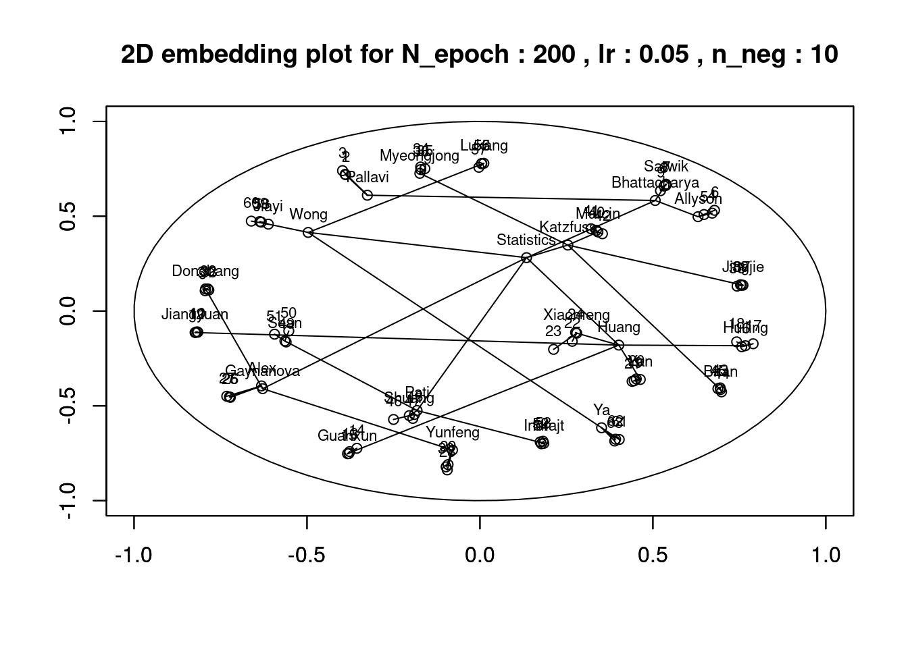

The Poincaré Embedding is concerned with the problem of learning hierarchical structure on the dataset. Phylogenetic tree or the tree of hypernymy are the examples of hierarchical structure dataset. The embedding space is a Poincaré ball, which is an unit ball equipped with poincaré distance. An advantage using Poincaré space compared to the Euclidean space as embedding space is that this space preserve tree-shaped structure well in relatively low dimension. This is because poincaré distance is intuitively continuous version of distance on tree-shaped dataset. We can take advantage of this property to provide efficient embeddings with comparably less dimensionality.
See [https://github.com/hwchang1201/poincare.embeddings/]
(Nickel and Kiela 2017)
(Nickel and Kiela 2018)
## Installing package into '/home/bruce/R/x86_64-pc-linux-gnu-library/3.6'
## (as 'lib' is unspecified)## Skipping install of 'poincare.embeddings' from a github remote, the SHA1 (7fd455e0) has not changed since last install.
## Use `force = TRUE` to force installation## Installing package into '/home/bruce/R/x86_64-pc-linux-gnu-library/3.6'
## (as 'lib' is unspecified)library(yaml)
library(data.tree)
# defining tree structured dataset.
acme_treeDataset <- Node$new("Acme Inc.")
accounting <- acme_treeDataset$AddChild("Accounting")
software <- accounting$AddChild("New Software")
standards <- accounting$AddChild("New Accounting Standards")
research <- acme_treeDataset$AddChild("Research")
newProductLine <- research$AddChild("New Product Line")
newLabs <- research$AddChild("New Labs")
it <- acme_treeDataset$AddChild("IT")
outsource <- it$AddChild("Outsource")
agile <- it$AddChild("Go agile")
goToR <- it$AddChild("Switch to R")
print(acme_treeDataset)## levelName
## 1 Acme Inc.
## 2 ¦--Accounting
## 3 ¦ ¦--New Software
## 4 ¦ °--New Accounting Standards
## 5 ¦--Research
## 6 ¦ ¦--New Product Line
## 7 ¦ °--New Labs
## 8 °--IT
## 9 ¦--Outsource
## 10 ¦--Go agile
## 11 °--Switch to R# loading package "poincare.embeddings"
library(poincare.embeddings)
# use example dataset
# 1. use "toy"
toy_yaml <- yaml::yaml.load(toy)
toy_tree <- data.tree::as.Node(toy_yaml)
emb <- poincareEmbeddings(toy_tree, theta_dim = 2, N_epoch = 200, lr = 0.05, n_neg = 10)
# 2. use "statistics"
statistics_yaml <- yaml::yaml.load(statistics)
statistics_tree <- data.tree::as.Node(statistics_yaml)
emb <- poincareEmbeddings(statistics_tree, theta_dim = 2, N_epoch = 200, lr = 0.05, n_neg = 10)
# 3. use "statistics_adv"
statistics_adv_yaml <- yaml::yaml.load(statistics_adv)
statistics_adv_tree <- data.tree::as.Node(statistics_adv_yaml)
emb <- poincareEmbeddings(statistics_adv_tree, theta_dim = 2, N_epoch = 200, lr = 0.05, n_neg = 10)
## [1] "The ranking of the poincare embedding : 5.56666666666667"## [1] "The mean average precision of the poincare embedding : 0.729472457386661"Nickel, Maximilian, and Douwe Kiela. 2017. “Poincaré Embeddings for Learning Hierarchical Representations.” CoRR abs/1705.08039. http://arxiv.org/abs/1705.08039.
Nickel, Maximilian, and Douwe Kiela. 2018. “Learning Continuous Hierarchies in the Lorentz Model of Hyperbolic Geometry.” CoRR abs/1806.03417. http://arxiv.org/abs/1806.03417.